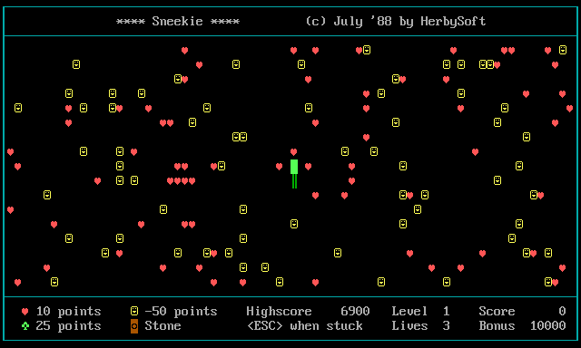
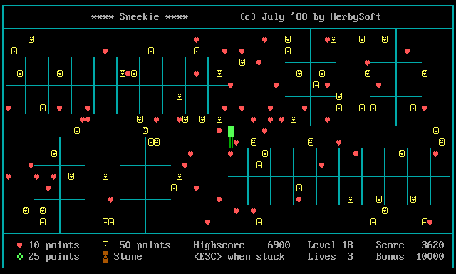
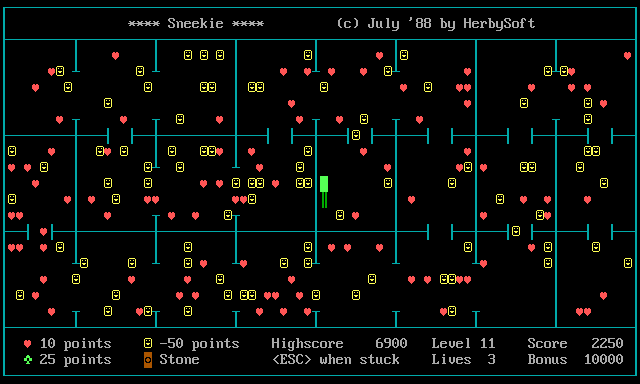
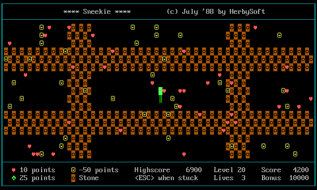
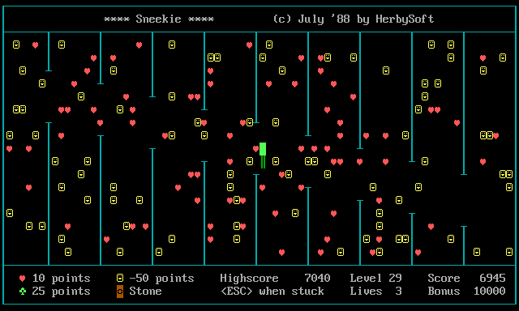
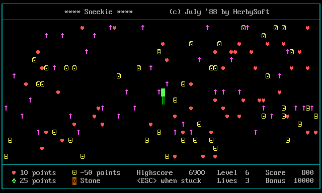
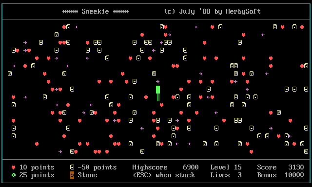
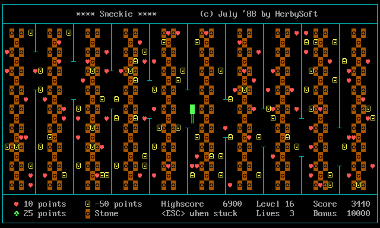

Player's Manual
Sneekie is a snake-in-a-maze game from July 1988. You steer a growing snake around a walled arena, hoovering up ♥ hearts. Clear every heart and you advance — through 32 levels built from 8 maze layouts. Mind the walls, the deadly arrows, and the smileys that cost you points. This page explains everything: the controls, the scoring, each of the 8 layouts, and how the 32 levels are put together.
The goal
Each level scatters a crowd of ♥ hearts across the arena. Eat them all and the level is cleared — whatever bonus time is left pours into your score, you earn a life, and the next level begins. The snake grows by one segment every time it eats anything, so the playfield gets tighter as you go.
Controls
| Key | Touch | What it does |
|---|---|---|
| ← ↑ ↓ → | Swipe | Steer the snake. It can't reverse straight back into itself. |
| any key | Tap | Dismiss the “Press any key” pop-ups between levels. |
| Esc | — | Give up when you're boxed in. Costs one life and restarts the level. |
| F9 | — | Cheat: extra life — and skips you to the next level. |
| F10 | — | Cheat: skip the level. |
Pressing a letter key (or steering into a wall) just bonks you: you stay put and lose a little bonus. Below the screen are the cabinet controls: the Green / Amber / White / CGA display themes, a Sound toggle, and Fullscreen (in fullscreen, press & hold Esc to leave — a single tap still works as “give up”).
The screen
The play area is framed by a border you can't cross. The status strip along the bottom shows:
- Level — which of the 32 levels you're on.
- Score / Highscore — your points; the best is kept between visits.
- Lives — how many tries you have left.
- Bonus — a timer that starts at
10000and ticks down every step. Clear the level fast and the leftover is added to your score.
Items & scoring
| Symbol | Item | Effect |
|---|---|---|
| ♥ | Heart | +10. Collect all of them to clear the level. |
| ♣ | Club | +25. A juicier treat (from level 17 on, hearts can drop one). |
| ☺ | Smiley | −50! — the trap. Eating one stings and grows you for nothing. Steer around them. |
| ◙ | Stone | A boulder. No points — but you can push it one cell if the space behind is clear. |
| ↑→← | Arrow | Deadly. Touch a moving arrow and you lose a life. |
| │─ | Wall / yourself | Solid. You can't move into a wall or your own body — you just bonk (−bonus). |
Lives
You start with 3 lives. You lose one whenever you die — by hitting a moving arrow, or by pressing Esc to give up when you're trapped. But you gain a life every time you clear a level (and F9 hands you one too), so a steady player keeps the count healthy. Run out and it's game over — then you can play again.
The eight layouts
Every level is one of these eight arenas. Layouts 1–4 are pure mazes — the only danger is getting stuck. Layouts 5–8 add a moving hazard. Each one below is a clip of the game playing itself — an autoplay snake hunting hearts, pushing stones, and dodging arrows:

The Open Arena
Nothing but the four border walls. Pure heart-collecting — the gentlest introduction.

Combs & Crosses
Clusters of comb-like pickets and plus-shaped crosses scattered through the quadrants to weave around.

The Room Grid
The arena is carved into a grid of rooms by vertical and horizontal walls, each with a door gap to slip through.

The Stone Field
A dense lattice of pushable ◙ stones. Shove them aside to carve your own paths to the hearts.

The Picket Columns
Tall walls hang from the top and bottom edges. Hazard: the gaps in them crawl up and down — an opening can close on you.

The Rising Arrows
An open field seeded with ↑ arrows that march upward a step at a time. Touching one is fatal.

The Sweeping Arrows
An open field with ←→ arrows sliding left and right across every row. Time your crossings.

The Vault
Vertical walls with columns of ◙ stones between them — and the wall-gaps crawl. The toughest mix in the game.
The 32 levels
There are only 8 layouts, so the game cycles through them four times. Each time around, the same eight arenas come back — but how the snake moves changes:
- Levels 1–8 — turn-based. The snake waits for your key; take your time (the bonus still ticks down).
- Levels 9–16 — it moves on its own. If you don't steer within the level's
pace (
0.4–1.2seconds — quicker on the open arenas, roomier on the cluttered ones), the snake keeps going by itself. You can still steer any time. - Levels 17–32 — an encore. Levels 17–24 repeat 1–8 (turn-based) and 25–32 repeat 9–16 (self-moving) — with one twist: from level 17 on, eating a heart can leave a ♣ club behind for bonus points.
| Layout | Hazard | Turn-based levels | Self-moving levels (pace) |
|---|---|---|---|
| 1 · Open Arena | — | 1, 17 | 9, 25 (0.4 s) |
| 2 · Combs & Crosses | walls | 2, 18 | 10, 26 (0.6 s) |
| 3 · Room Grid | walls | 3, 19 | 11, 27 (0.6 s) |
| 4 · Stone Field | stones | 4, 20 | 12, 28 (0.9 s) |
| 5 · Picket Columns | crawling gaps | 5, 21 | 13, 29 (0.9 s) |
| 6 · Rising Arrows | up-arrows | 6, 22 | 14, 30 (1.0 s) |
| 7 · Sweeping Arrows | side-arrows | 7, 23 | 15, 31 (1.0 s) |
| 8 · The Vault | stones + crawling gaps | 8, 24 | 16, 32 (1.2 s) |
Tips
- Clear fast. The bonus is real points — dawdling on level 1 throws away up to 10 000.
- Give the smileys a wide berth. A stray ☺ costs 50 points and grows you, making the arena harder.
- You won't die from your own tail — you just can't pass through it. But a long snake can box itself in; when truly stuck, Esc cuts your losses to a single life.
- Push stones into dead ends to clear a lane — but you can only shove one if the cell behind it is empty.
- On arrow levels, keep moving. Read the arrows' direction and slip through the gaps; never park in a column (level 6) or a row (level 7) that an arrow is sweeping.
About
Sneekie was written in GW-BASIC in July 1988 by HerbySoft and published in MSX/MS-DOS Computer Magazine no. 25. In 2026 its printed listing was recovered by OCR and ported, line for line, to this single web page. Curious how it works? The Visualizer shows the screen-is-the-memory trick at the heart of it, and the Explained edition walks through the original code.